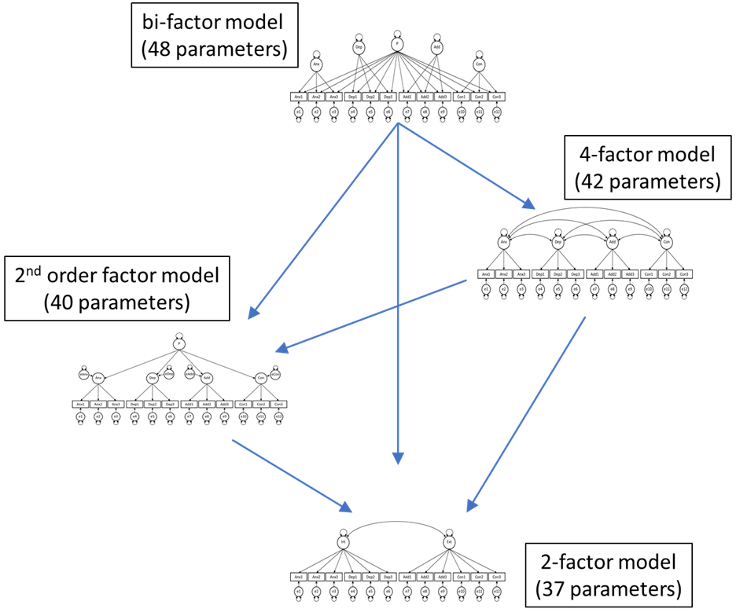
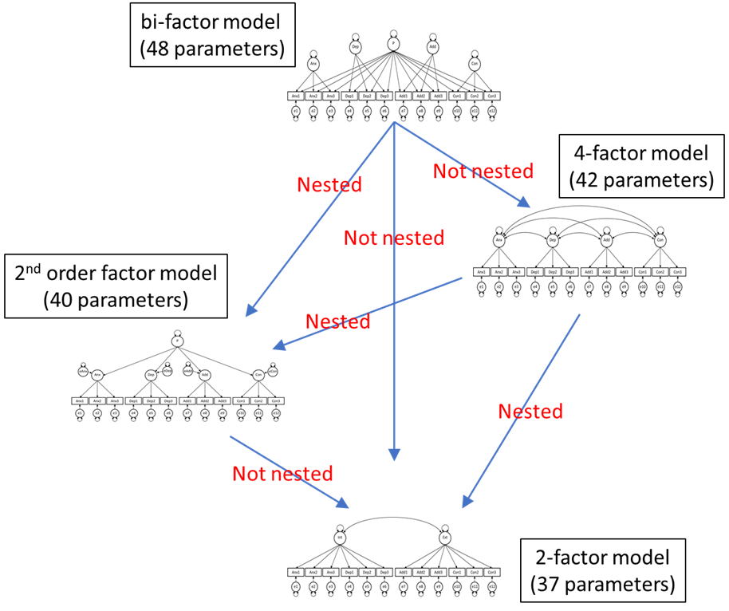

Part 1: Factor analysis and nested model check
Day 3: Full Structural Equation Modeling
Suppose there are three researchers who are investigating the underlying factor structure of psychopathology (i.e., mental illness). The data (file: ex5.6.dat) they have obtained consists of 12 items, where:
Anx1,Anx2, andAnx3measure anxiety;Dep1,Dep2, andDep3measure depression;Add1,Add2, andAdd3measure addictive behaviors;Con1,Con2, andCon3measure conflict behaviors.
The four researchers have different ideas about how these data should be modeled. Their ideas are depicted and described below.
Researcher 1 assumes that there is one general psychopathology factor P, and that there are four unique (and uncorrelated) factors for the four different clusters of items. Such a model is known as the bi-factor model.
Researcher 2 assumes that the best way to describe these data is by use of a 4-factor model, in which these factors are allowed to covary.
Researcher 3 also believes there is a general factor P, but assumes this is a factor that relates the other four factors. This is known as a second-order factor model.
Researcher 4 thinks the approach should be simpler and assumes there are two factors: An internalizing factor (consisting of the anxiety and depression items), and an externalizing factor (consisting of the addiction and conflict items). This is the two-factor model.
Exercise 1
Specify each of these models in Mplus, and add the missing information to the table below. You can use the number of free parameters and/or the number of df to check whether you specified the model correctly.
| Model | Free parameters | df | \(\chi^{2}\) | p-value |
|---|---|---|---|---|
| bi-factor model | 48 | 42 | 41.64 | .487 |
| 4-factor model | 42 | 48 | 45.78 | .564 |
| second-order factor model | 40 | 50 | 46.74 | .605 |
| 2-factor model | 37 | 53 | 1780.55 | \(<\).001 |
Exercise 2
The researchers want to compare the models using a \(\Delta \chi^{2}\)-test, if possible. Can you help these researchers figure out whether or not these models are nested? Note that a necessary but not sufficient condition for nesting is that the nested (more parsimonious model) has fewer free parameters (thus more df) than the more general model. Hence, based on the number of free parameters, we can make the following comparisons:
| More general model | More parsimonious model(s) | Nested? |
|---|---|---|
| bi-factor model | 4-factor model | … |
| bi-factor model | second-order factor model | … |
| bi-factor model | 2-factor model | … |
| 4-factor model | second-order factor model | … |
| 4-factor model | 2-factor model | … |
| second-order factor model | 2-factor model | … |
Perform the nesting checks included in the table and indicate for each whether the models are nested. Use this information in the figure below to indicate for each arrow whether or not the models are nested.

SAVEDATA command
To compare the models, first run the most parsimonious model and save data for a nested test by adding to following command to your syntax:
SAVEDATA: NESTED = 2factormodel.dat;If you are using Mplus via SolisWorkspace, then you need to explicitly specify the path to which you want to save the 2factormodel.dat to for this command to work. Mplus will throw an error if you fail to do this. Specify a path within apostrophes (“ “) and do not forget to end the command with a semi-colon. You can find the path within Mplus by going to the File-menu, and clicking on ‘Open…’. Navigate to the folder where you want to save the .dat-file in, and copy the path in the navigation bar. Paste this path within the apostrophes in the SAVEDATA command, and extend with the name that you want to give the .dat-file.
The SAVEDATA-command should be something like:
SAVEDATA: NESTED = "\\Client\C$\Users\...
…S20 - Day 3\Exercise 1\2factormodel.dat";Commands in Mplus must not exceed 90 characters per line. So if your path is quite long, don’t forget to break up your command (before the 90\(^{th}\) character) and continue on a second (or third, etc.) line. See the example above. Then run the model that that is more general, and perform the nested test by adding (here you don’t need to explicitly specify the path to the .dat-file):
ANALYSIS: NESTED = 2factormodel.dat;This gives you the following output under the fit statistics (just above the SRMR):
Nested Model Check
Result Not Nested
Fit Function Value 0.09146430This implies that the 2-factor model of research 4 is not a special case of the second-order factor model of researcher 3.
 Take home message:
- Conclusion 1: Parsimony—while a necessary condition—is not a sufficient condition for nesting.
- Conclusion 2: Models that look quite different, may nevertheless be nested.